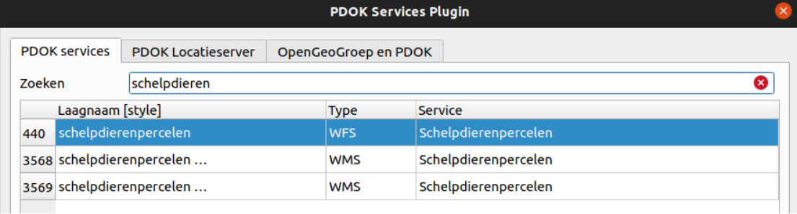
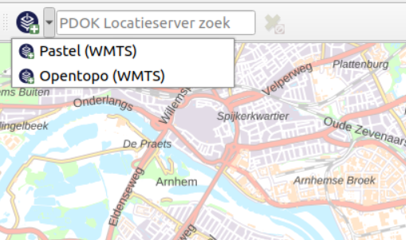
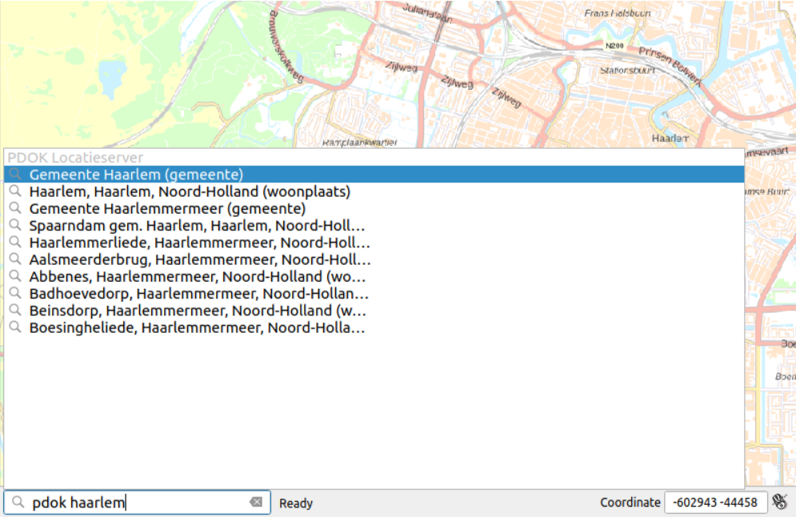

De PDOK Services Plugin is een plugin om eenvoudig PDOK services binnen QGIS te gebruiken. Hieronder zijn de verschillende features van de plugin beschreven.





Transformeer locatie namen (adressen, plaatsnamen etc.) in geometrieën met behulp van de PDOK Locatieserver.
Voorbeeld usecase: transformeer een CSV bestand met adressen naar een GeoPackage file met punt geometrieën met een adres attribuut.
Transformeer geometrieën in locatie namen (adressen, plaatsnamen etc.) met behulp van de PDOK Locatieserver.
Voorbeeld usecase: transformeer een Geopackage bestand met punt geometrieën naar een GeoPackage bestand met punt geometrieën met een adres attribuut.
Ophalen van hoogte waardes (elevatie) voor punt geometrieën op basis van de AHN3 Web Coverage Service (WCS).
Voorbeeld usecase: transformeer een Geopackage bestand met punt geometrieën naar een GeoPackage bestand met punt geometrieën met een hoogte attribuut.